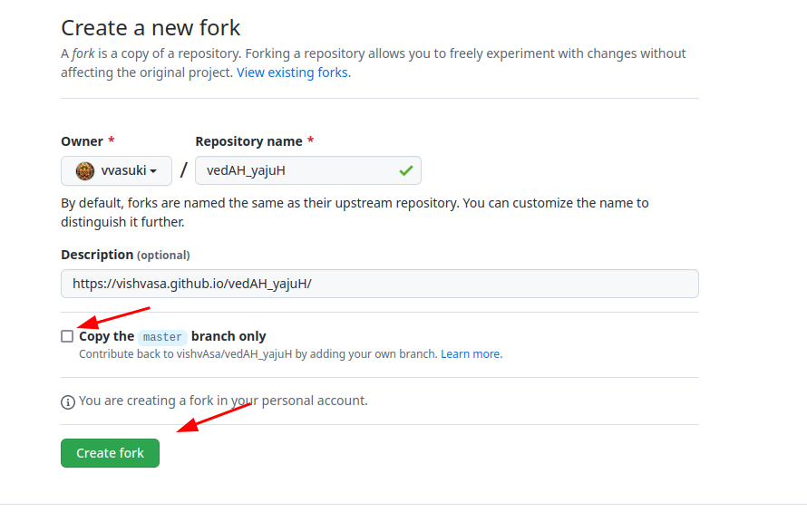

निर्देश-समीक्रिया (द्रष्टुं नोद्यम्)
- अधः XYZ इति यद् अस्ति, तस्य स्थाने स्वीयं github-नाम प्रयुङ्क्ताम्। (Below, replace ‘XYZ’ with your github username.)
- अथवैतत् प्रयुज्यतां यन्त्रम्:
- Back to Git workflow
- Create an account on https://github.com. Sign in.
- If https://github.com/XYZ/REPO exists beforehand, please delete it by going to settings using your browser (Go to https://github.com/XYZ/REPO/settings#danger-zone, navigate to the end of the page, and click on “Delete this repository”.) .
- Go to https://github.com/vishvAsa/REPO/fork and fork (there should be a “Create Fork” button). When forking, make sure to uncheck “Copy the master branch only” option (ATTENTION! DON’T FORGET THIS. PLEASE SEE PIC BELOW). Thence, you will get https://github.com/XYZ/REPO/tree/content .
संस्कृतानुवादः (द्रष्टुं नोद्यम्)
- https://github.com/XYZ/REPO इति पूर्वम् एव वर्तते चेन् निष्कासयतु browser-उपयोगेन (https://github.com/XYZ/REPO/settings#danger-zone इत्यत्र गत्वा, पृष्ठस्यान्तं गत्वा “Delete this repository” इति करोतु।) ।
- https://github.com/vishvAsa/REPO/fork इत्यत्र गत्वा पुनः “Create Fork” इति नुदतु। तत्करणे “Copy the master branch only " इति विकल्पं निराकरोतु (सावधानम्! न विस्मरतु!! चित्रम् ईक्षताम् अधः। )। तेन https://github.com/XYZ/REPO/tree/content इति किञ्चिल् लभ्यते।
{kind=link}
